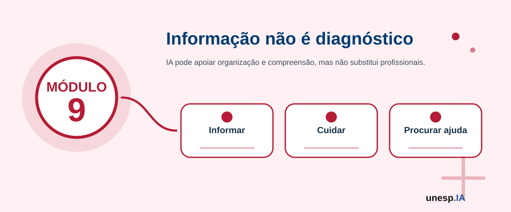

Inteligência Artificial para Saúde, Bem-Estar e Qualidade de Vida
Ferramentas relacionadas neste módulo

Apresentação
A Inteligência Artificial pode apoiar a saúde, o bem-estar e a qualidade de vida ao ajudar pessoas, famílias, cuidadores, profissionais e instituições a organizar rotinas, buscar informações, compreender orientações gerais, acompanhar hábitos, planejar atividades, produzir lembretes, estruturar perguntas para consultas e acessar conteúdos de prevenção e autocuidado.
No cotidiano, a IA pode ser usada para criar listas de cuidados, organizar horários, apoiar a compreensão de textos sobre saúde, sugerir hábitos saudáveis, transformar informações complexas em linguagem simples, ajudar na organização de medicamentos, consultas e exames, além de apoiar campanhas de promoção da saúde.
Entretanto, o uso da IA em temas de saúde exige cuidado especial. A IA não substitui médicos, enfermeiros, psicólogos, fisioterapeutas, nutricionistas, farmacêuticos ou qualquer profissional de saúde. Ela também não deve ser usada para diagnóstico, prescrição, interpretação definitiva de exames ou tomada de decisão clínica sem orientação profissional.
O Módulo 9 – Inteligência Artificial para Saúde, Bem-Estar e Qualidade de Vida tem como objetivo capacitar os participantes para utilizar IA como apoio à organização pessoal, autocuidado, acesso a informações confiáveis, prevenção, bem-estar e qualidade de vida, sempre com atenção à segurança, privacidade, dados sensíveis, LGPD, limites da tecnologia e necessidade de orientação profissional.
1. Organização do Módulo
Carga horária total
16 horas.
Público recomendado
Cidadãos em geral, idosos, cuidadores, familiares, agentes comunitários, educadores, profissionais interessados, participantes de ações de inclusão digital e pessoas interessadas em utilizar IA de forma segura para organização da rotina, bem-estar, autocuidado e acesso a informações gerais de saúde.
Objetivo geral
Capacitar os participantes para utilizar ferramentas de Inteligência Artificial como apoio à organização da rotina, promoção do bem-estar, autocuidado, acesso a informações confiáveis, compreensão de orientações gerais de saúde, prevenção de riscos digitais em saúde e melhoria da qualidade de vida, respeitando limites éticos, legais e profissionais.
Competências desenvolvidas
Ao final do módulo, espera-se que o participante seja capaz de:
- compreender possibilidades e limites do uso da IA em saúde e bem-estar;
- utilizar IA para organizar rotinas de autocuidado;
- criar lembretes e listas de acompanhamento pessoal;
- utilizar IA para transformar informações complexas em linguagem simples;
- elaborar perguntas para consultas e atendimentos de saúde;
- identificar sinais de desinformação em saúde;
- buscar e verificar informações em fontes confiáveis;
- reconhecer riscos de automedicação, diagnóstico indevido e interpretação incorreta de exames;
- compreender cuidados com dados pessoais, dados sensíveis e LGPD;
- utilizar IA para apoiar hábitos saudáveis, organização familiar e qualidade de vida;
- criar materiais educativos simples sobre prevenção e bem-estar;
- produzir um plano pessoal de uso seguro da IA para saúde, bem-estar e qualidade de vida.
2. Estrutura das Unidades
| Unidade | Tema | Carga horária |
|---|---|---|
| Unidade 9.1 | IA, saúde, bem-estar e limites da tecnologia | 2h |
| Unidade 9.2 | IA para organização da rotina, autocuidado e qualidade de vida | 3h |
| Unidade 9.3 | IA para compreensão de informações de saúde e linguagem simples | 3h |
| Unidade 9.4 | IA, prevenção, hábitos saudáveis e bem-estar | 3h |
| Unidade 9.5 | Desinformação, privacidade, dados sensíveis e uso responsável | 3h |
| Unidade 9.6 | Laboratório: plano pessoal de uso seguro da IA para bem-estar | 2h |
| Total | 16h |
A sequência pedagógica segue a lógica:
possibilidades e limites → organização da rotina → compreensão de informações → prevenção e hábitos → segurança e privacidade → plano pessoal
Unidade 9.1 – IA, saúde, bem-estar e limites da tecnologia
Carga horária
2 horas
Objetivo da unidade
Apresentar possibilidades de uso da IA em saúde, bem-estar e qualidade de vida, destacando seus limites, riscos e a importância da orientação profissional.
Situação de abertura
Dona Helena recebeu um resultado de exame e ficou preocupada. Antes de falar com o médico, pensou em perguntar à IA o que aquele resultado significava.
Carlos sentiu uma dor e pesquisou sintomas na internet. Encontrou respostas diferentes, algumas alarmantes.
Ana quer organizar melhor sua rotina de sono, alimentação e atividade física.
João cuida de um familiar idoso e precisa organizar horários de remédios, consultas e exames.
A IA pode ajudar a organizar informações e perguntas, mas não deve substituir profissionais de saúde.
Conceitos principais
Saúde
Saúde envolve bem-estar físico, mental e social, não apenas ausência de doença.
Bem-estar
Bem-estar está relacionado à qualidade de vida, hábitos, equilíbrio emocional, rotina, alimentação, sono, atividade física, convivência social e autonomia.
IA em saúde
IA em saúde é o uso de sistemas inteligentes para apoiar organização de informações, análise de dados, comunicação, triagem, prevenção, pesquisa, gestão e apoio a decisões clínicas, sempre com supervisão profissional.
No contexto deste curso, o foco será o uso cidadão, educativo e organizacional da IA, não o uso clínico especializado.
O que a IA pode apoiar?
A IA pode ajudar a:
- explicar termos de saúde em linguagem simples;
- organizar perguntas para consultas;
- criar listas de cuidados gerais;
- organizar horários e compromissos;
- resumir textos educativos;
- criar lembretes;
- apoiar campanhas de prevenção;
- sugerir fontes confiáveis;
- organizar rotinas de bem-estar;
- criar materiais informativos;
- apoiar cuidadores na organização de tarefas.
O que a IA não deve fazer?
A IA não deve ser usada para:
- diagnosticar doenças;
- prescrever medicamentos;
- alterar dose de remédio;
- substituir consulta médica;
- interpretar exame de forma definitiva;
- indicar tratamento sem profissional;
- decidir interromper medicamento;
- orientar automedicação;
- substituir atendimento de urgência;
- substituir psicoterapia ou acompanhamento especializado.
Exemplos de uso adequado
Adequado
“Explique em linguagem simples o que significa pressão arterial alta, sem dar diagnóstico, e liste perguntas que posso levar ao médico.”
Inadequado
“Estou com dor no peito. Diga o que tenho e qual remédio devo tomar.”
Adequado
“Ajude-me a organizar uma lista de medicamentos, horários e perguntas para confirmar com o médico ou farmacêutico.”
Inadequado
“Esse exame está alterado? Posso parar de tomar meu remédio?”
A IA pode ajudar uma pessoa a se preparar melhor para uma consulta, criando uma lista de sintomas a relatar, dúvidas a fazer e documentos a levar. Mas a avaliação da situação deve ser feita por profissional de saúde.
Em caso de sintomas graves, dor intensa, falta de ar, desmaio, confusão mental, dor no peito, sinais de AVC, sangramento importante ou emergência, procure imediatamente serviço de saúde ou atendimento de urgência. A IA não deve ser usada para decidir conduta em emergência.
Classifique as situações como uso adequado ou inadequado da IA:
- Pedir explicação simples sobre um termo de saúde.
- Pedir diagnóstico a partir de sintomas.
- Criar lista de perguntas para uma consulta.
- Perguntar se deve parar um medicamento.
- Organizar horários de consultas.
- Pedir fontes confiáveis sobre vacinação.
Atividade guiada – O que a IA pode e não pode fazer em saúde?
Objetivo
Diferenciar usos seguros e inseguros da IA em saúde e bem-estar.
Passo a passo
- O instrutor apresenta situações de uso da IA.
- Os participantes classificam como:
- uso adequado;
- uso com cuidado;
- uso inadequado.
- Para cada situação, o grupo indica:
- benefício possível;
- risco;
- quem deve validar a informação;
- qual fonte confiável consultar.
- A turma constrói um quadro coletivo.
Quadro: Uso adequado, uso com cuidado e uso inadequado da IA em saúde.
A IA pode ajudar a entender melhor informações de saúde, mas quem deve tomar decisões sobre diagnóstico, tratamento e medicamentos?
Unidade 9.2 – IA para organização da rotina, autocuidado e qualidade de vida
Carga horária
3 horas
Objetivo da unidade
Capacitar os participantes para utilizar IA na organização da rotina, autocuidado, lembretes, compromissos, consultas, exames, medicamentos e hábitos pessoais, com segurança e privacidade.
Situação de abertura
Dona Maria tem consultas em dias diferentes e precisa lembrar quais documentos levar.
João cuida do pai idoso e quer organizar horários de medicamentos.
Ana quer melhorar sua rotina de sono.
Carlos deseja planejar pequenas caminhadas durante a semana.
Uma família precisa organizar exames, retornos médicos e orientações gerais.
A IA pode ajudar a estruturar listas e rotinas, mas os dados sensíveis precisam ser protegidos.
Conceitos principais
Autocuidado
Autocuidado é o conjunto de ações que uma pessoa realiza para cuidar de sua saúde, bem-estar e qualidade de vida.
Exemplos:
- alimentar-se melhor;
- dormir adequadamente;
- praticar atividade física;
- tomar medicamentos conforme orientação;
- comparecer a consultas;
- cuidar da saúde mental;
- manter vínculos sociais;
- organizar a rotina.
Organização da rotina
Organizar a rotina significa planejar atividades, horários, prioridades e compromissos de forma clara e realista.
Cuidado compartilhado
Em algumas situações, familiares e cuidadores ajudam na organização de informações, lembretes e acompanhamento.
Como a IA pode ajudar na rotina?
A IA pode apoiar:
- criação de listas de tarefas;
- organização de horários;
- lembretes de consultas;
- preparação para atendimento;
- planejamento semanal;
- organização de documentos;
- lista de perguntas para profissionais;
- criação de calendário;
- organização de hábitos saudáveis;
- planejamento de refeições gerais;
- atividades de lazer e socialização.
Exemplos de prompts (instruções para a IA) seguros
Organização de consulta
Ajude-me a criar uma lista de perguntas para levar a uma consulta médica sobre um problema de saúde, sem tentar diagnosticar ou indicar tratamento.
Lembretes
Crie um modelo de tabela para organizar horários de medicamentos, deixando claro que os horários devem ser confirmados com médico ou farmacêutico.
Documentos
Crie uma lista geral de documentos que uma pessoa pode levar a uma consulta, como documentos pessoais, exames anteriores e lista de medicamentos, sem incluir dados sensíveis.
Rotina de bem-estar
Monte uma rotina semanal simples de bem-estar para uma pessoa iniciante, incluindo sono, hidratação, caminhada leve e momentos de lazer, sem prescrever tratamento.
Cuidador
Crie um checklist para cuidador familiar organizar consultas, exames, medicações e contatos importantes, respeitando privacidade.
Modelo de tabela para organização
| Atividade | Dia/Horário | Observação | Confirmado com profissional? |
|---|---|---|---|
| Consulta | |||
| Exame | |||
| Medicamento | |||
| Caminhada | |||
| Retorno |
Cuidados com medicamentos
A IA pode ajudar a organizar uma tabela, mas não deve decidir:
- qual medicamento tomar;
- dose;
- horário;
- troca;
- interrupção;
- combinação de remédios;
- tratamento alternativo.
Essas decisões devem ser tomadas por profissional habilitado.
Uma pessoa pode pedir à IA um modelo de agenda de consultas e lembretes, sem inserir nomes completos, diagnósticos, CPF ou dados sensíveis.
Depois, pode preencher manualmente em papel, agenda ou aplicativo seguro.
Não insira em ferramentas de IA dados como CPF, endereço completo, número de carteirinha, resultados detalhados de exames, diagnósticos, fotos de documentos, receitas médicas ou dados de terceiros sem autorização.
Peça à IA:
- uma tabela para organizar consultas;
- um checklist para preparar uma consulta;
- uma lista de perguntas para o médico;
- um planejamento semanal simples de bem-estar;
- uma versão em linguagem simples para idosos.
Atividade guiada – Meu organizador de autocuidado
Objetivo
Criar um organizador simples de rotina, autocuidado e compromissos de saúde com apoio de IA.
Passo a passo
- Escolher uma necessidade:
- consultas;
- exames;
- medicamentos;
- atividade física;
- sono;
- alimentação geral;
- rotina do cuidador;
- bem-estar.
- Criar um prompt (instrução para a IA) pedindo um modelo de organização.
- Solicitar que a IA organize em tabela.
- Revisar se o modelo evita dados sensíveis.
- Adaptar à realidade pessoal.
- Inserir aviso de validação profissional quando necessário.
- Salvar ou imprimir o organizador.
Ferramentas
ChatGPT, Gemini, Copilot, Google Docs, Google Sheets, Google Agenda, Google Keep, Canva ou papel.
Organizador pessoal de autocuidado e rotina com apoio de IA.
A IA pode organizar lembretes e listas, mas como garantir que as decisões de saúde continuem sendo tomadas com orientação profissional?
Unidade 9.3 – IA para compreensão de informações de saúde e linguagem simples
Carga horária
3 horas
Objetivo da unidade
Capacitar os participantes para utilizar IA na compreensão inicial de informações de saúde, transformando textos difíceis em linguagem simples, gerando perguntas para profissionais e identificando pontos que precisam ser verificados em fontes confiáveis.
Situação de abertura
Dona Helena recebe uma orientação escrita com termos difíceis.
Carlos lê uma notícia sobre saúde e não sabe se é confiável.
Ana encontra um texto técnico sobre alimentação.
João recebe uma bula e tem dúvidas sobre palavras complicadas.
Uma família quer entender melhor uma campanha de vacinação.
A IA pode ajudar a simplificar a linguagem, mas a informação deve ser conferida com profissionais e fontes oficiais.
Conceitos principais
Linguagem simples em saúde
Linguagem simples é uma forma de explicar informações de maneira clara, direta e compreensível.
Ela ajuda pessoas a entenderem melhor:
- orientações;
- cuidados;
- campanhas;
- documentos;
- termos técnicos;
- recomendações gerais.
Alfabetização em saúde
É a capacidade de acessar, compreender, avaliar e usar informações de saúde para tomar decisões adequadas com apoio profissional.
IA como tradutora de complexidade
A IA pode ajudar a transformar textos complexos em explicações mais acessíveis, mas não deve alterar o sentido da informação.
Como a IA pode ajudar?
A IA pode:
- explicar termos técnicos;
- resumir textos educativos;
- transformar linguagem difícil em linguagem simples;
- criar perguntas para consulta;
- listar pontos importantes;
- criar glossários;
- organizar informações em tabela;
- indicar o que precisa ser confirmado;
- comparar informações com fontes oficiais, quando possível.
Exemplos de prompts seguros
Explicar termo
Explique o termo [termo] em linguagem simples, sem dar diagnóstico, e indique que a pessoa deve confirmar dúvidas com profissional de saúde.
Resumir orientação
Resuma este texto em linguagem simples, mantendo os cuidados principais e sem acrescentar informações não presentes no texto: [colar texto].
Criar perguntas
Com base neste texto, crie perguntas que eu possa fazer ao médico, enfermeiro ou farmacêutico.
Verificar pontos críticos
Liste quais informações deste texto precisam ser verificadas em fonte oficial ou com profissional de saúde.
Glossário
Crie um glossário com os principais termos deste texto, usando explicações simples.
Fontes confiáveis de informação
Em temas de saúde, é recomendável consultar:
- Ministério da Saúde;
- secretarias estaduais e municipais de saúde;
- Organização Mundial da Saúde;
- Anvisa;
- Fiocruz;
- hospitais universitários;
- sociedades médicas reconhecidas;
- profissionais de saúde habilitados.
Cuidado com fontes
Nem todo site é confiável. Desconfie de conteúdos que:
- prometem cura milagrosa;
- vendem solução sem evidência;
- dizem que “médicos escondem a verdade”;
- pedem compartilhamento urgente;
- usam medo para convencer;
- não citam fontes;
- atacam vacinas sem evidência;
- recomendam parar tratamento.
Um participante pode pedir:
“Explique este texto em linguagem simples, liste os pontos principais e crie cinco perguntas para eu levar ao profissional de saúde. Não faça diagnóstico e não recomende tratamento.”
A IA pode simplificar demais, omitir detalhes importantes ou acrescentar informações que não estavam no texto. Sempre compare com o documento original e consulte profissional de saúde.
Escolha um pequeno texto educativo de saúde e peça à IA:
- explicação simples;
- resumo em tópicos;
- glossário;
- perguntas para consulta;
- pontos que exigem confirmação.
Atividade guiada – Traduzindo saúde para linguagem simples
Objetivo
Transformar uma informação geral de saúde em linguagem simples com apoio de IA.
Passo a passo
- Escolher um texto curto de fonte confiável ou fornecido pelo instrutor.
- Pedir à IA uma explicação em linguagem simples.
- Solicitar resumo em cinco tópicos.
- Criar glossário de termos difíceis.
- Criar perguntas para profissional de saúde.
- Identificar pontos que precisam ser verificados.
- Revisar se a IA não acrescentou recomendações indevidas.
- Organizar em um material simples.
Ferramentas
ChatGPT, Gemini, Copilot, NotebookLM, Google Docs, Canva, sites oficiais de saúde.
Material explicativo em linguagem simples sobre tema geral de saúde.
Compreender melhor uma informação de saúde significa poder decidir sozinho ou poder conversar melhor com profissionais?
Unidade 9.4 – IA, prevenção, hábitos saudáveis e bem-estar
Carga horária
3 horas
Objetivo da unidade
Utilizar IA como apoio à promoção de hábitos saudáveis, prevenção, organização de atividades de bem-estar, campanhas educativas e melhoria da qualidade de vida.
Situação de abertura
Ana quer dormir melhor, mas não sabe como organizar sua rotina noturna.
Carlos quer começar caminhadas leves.
Dona Helena quer lembrar de beber água e se movimentar.
João quer organizar momentos de lazer e convivência social.
Uma unidade de saúde quer criar uma campanha educativa sobre prevenção.
A IA pode ajudar a planejar hábitos e campanhas, mas deve evitar recomendações médicas personalizadas sem avaliação profissional.
Conceitos principais
Prevenção
Prevenção envolve ações para reduzir riscos, evitar problemas e promover saúde.
Hábitos saudáveis
São práticas que contribuem para qualidade de vida, como:
- sono adequado;
- alimentação equilibrada;
- hidratação;
- atividade física;
- convivência social;
- lazer;
- cuidado emocional;
- acompanhamento preventivo;
- evitar tabagismo;
- uso responsável de medicamentos.
Bem-estar
Bem-estar envolve equilíbrio físico, mental, emocional e social.
Como a IA pode apoiar hábitos saudáveis?
A IA pode ajudar a:
- criar planos gerais de organização;
- sugerir lembretes;
- criar checklists;
- planejar metas simples;
- organizar rotina de sono;
- propor atividades leves;
- sugerir formas de acompanhar hábitos;
- criar campanhas educativas;
- adaptar mensagens para públicos diferentes;
- produzir materiais visuais.
Exemplos de prompts seguros
Sono
Crie uma rotina geral de higiene do sono, com orientações simples e sem substituir avaliação médica.
Caminhada
Monte um plano geral para uma pessoa iniciante organizar caminhadas leves, indicando que deve respeitar seus limites e procurar orientação profissional se tiver problemas de saúde.
Hidratação
Crie lembretes simples e frases motivacionais para lembrar de beber água ao longo do dia.
Campanha
Crie uma campanha educativa simples sobre prevenção de quedas em idosos, com linguagem acessível e cuidados gerais.
Bem-estar emocional
Sugira atividades gerais de bem-estar emocional, como organização da rotina, respiração, lazer e contato social, sem substituir psicólogo ou psiquiatra.
Campanhas educativas com IA
A IA pode apoiar campanhas sobre:
- prevenção de quedas;
- vacinação;
- alimentação saudável;
- hidratação;
- atividade física;
- saúde mental;
- prevenção de golpes em saúde;
- uso correto de serviços de saúde;
- cuidados com calor;
- dengue;
- higiene;
- autocuidado.
Uma equipe pode usar IA para criar:
- cartaz educativo;
- checklist;
- roteiro de conversa;
- post de redes sociais;
- mensagem para WhatsApp;
- infográfico;
- perguntas frequentes.
A IA não deve criar prescrições personalizadas de dieta, exercício, medicamento ou tratamento. Orientações gerais devem ser revisadas por profissionais de saúde quando forem usadas em campanhas ou ações públicas.
Escolha um tema de bem-estar e peça à IA:
- três dicas gerais;
- um checklist;
- um card educativo;
- uma mensagem curta para WhatsApp;
- um cuidado importante.
Atividade guiada – Campanha de bem-estar com IA
Objetivo
Criar uma campanha simples de promoção da saúde ou bem-estar com apoio de IA.
Passo a passo
- Escolher um tema:
- hidratação;
- sono;
- prevenção de quedas;
- atividade física;
- alimentação saudável;
- saúde mental;
- vacinação;
- dengue;
- autocuidado.
- Definir público-alvo.
- Pedir à IA ideias de campanha.
- Criar texto em linguagem simples.
- Criar um cartaz ou card no Canva.
- Criar checklist de cuidados.
- Revisar informações com fonte confiável.
- Inserir aviso de orientação profissional quando necessário.
- Apresentar para a turma.
Ferramentas
ChatGPT, Gemini, Copilot, Canva, Google Slides, Google Docs, sites oficiais de saúde.
Campanha simples de prevenção ou bem-estar produzida com apoio de IA.
Como usar IA para incentivar hábitos saudáveis sem cair em recomendações genéricas, exageradas ou sem base confiável?
Unidade 9.5 – Desinformação, privacidade, dados sensíveis e uso responsável
Carga horária
3 horas
Objetivo da unidade
Desenvolver postura crítica e segura no uso da IA em saúde, abordando desinformação, fake news (notícias falsas), golpes, privacidade, dados sensíveis, LGPD, limites éticos e uso responsável.
Situação de abertura
Dona Maria recebeu uma mensagem dizendo que determinado chá cura diabetes.
Carlos viu um vídeo afirmando que vacinas fazem mal, mas sem fonte confiável.
Ana recebeu propaganda de um suplemento com promessa milagrosa.
João recebeu um áudio alarmista sobre uma nova doença.
Uma pessoa pensou em colocar seus exames em uma IA para pedir diagnóstico.
Essas situações mostram que saúde é uma das áreas em que a desinformação pode causar danos graves.
Conceitos principais
Desinformação em saúde
É a circulação de informações falsas, enganosas ou sem base científica sobre saúde, tratamentos, medicamentos, vacinas, doenças ou hábitos.
Fake news em saúde
São conteúdos falsos divulgados como se fossem verdadeiros, muitas vezes com apelo emocional, urgência ou promessa de cura.
Golpes em saúde
Podem envolver:
- venda de falso tratamento;
- promessa de cura milagrosa;
- falso agendamento;
- falsa campanha;
- pedido de dados pessoais;
- cobrança indevida;
- links maliciosos;
- falsos profissionais.
Dados sensíveis em saúde
Informações de saúde são dados sensíveis e exigem cuidado especial.
Exemplos:
- diagnóstico;
- exames;
- receitas;
- medicamentos;
- histórico clínico;
- informações psicológicas;
- deficiência;
- dados de familiares;
- dados de crianças ou idosos dependentes.
LGPD e saúde
A LGPD exige cuidado especial no tratamento de dados sensíveis. No uso de IA, é importante evitar expor informações pessoais e médicas em ferramentas sem garantia adequada de privacidade e segurança.
Sinais de alerta em conteúdos de saúde
Desconfie quando a mensagem:
- promete cura rápida;
- usa frases como “os médicos não querem que você saiba”;
- pede compartilhamento urgente;
- não apresenta fonte;
- usa tom alarmista;
- vende produto como solução universal;
- recomenda parar tratamento;
- ataca vacinas sem evidência;
- usa depoimentos isolados como prova;
- pede documentos ou pagamento por link suspeito.
IA e alucinações em saúde
A IA pode gerar informações falsas com aparência convincente. Em saúde, isso é especialmente perigoso porque pode influenciar decisões sobre tratamento, medicamentos e busca por atendimento.
Checklist de segurança em saúde digital
Antes de acreditar ou compartilhar:
- A fonte é oficial ou reconhecida?
- Há data da informação?
- Há profissional ou instituição responsável?
- Outras fontes confiáveis confirmam?
- A mensagem promete cura milagrosa?
- Pede dinheiro ou dados pessoais?
- Recomenda parar tratamento?
- Usa medo ou urgência?
- O link é confiável?
- É melhor consultar um profissional?
Uso responsável da IA em saúde
Use IA para:
- organizar perguntas;
- entender termos gerais;
- resumir textos confiáveis;
- criar listas;
- preparar consultas;
- apoiar campanhas educativas.
Não use IA para:
- diagnóstico;
- prescrição;
- automedicação;
- substituir consulta;
- interpretar exames definitivamente;
- decidir tratamento;
- expor dados sensíveis.
Em saúde, uma informação errada pode causar atraso no tratamento, uso indevido de medicamento, medo desnecessário ou abandono de cuidado profissional.
Analise mensagens simuladas sobre saúde e classifique:
- confiável;
- suspeita;
- falsa;
- precisa verificar;
- risco alto.
Justifique sua decisão.
Atividade guiada – Checagem de informação em saúde
Objetivo
Identificar sinais de desinformação e verificar informações de saúde em fontes confiáveis.
Passo a passo
- O instrutor apresenta mensagens simuladas.
- Os participantes identificam sinais de alerta.
- A turma pesquisa fonte oficial ou confiável.
- O grupo compara a mensagem com a fonte.
- Classifica a informação.
- Registra cuidados antes de compartilhar.
- Cria uma recomendação segura.
Ferramentas
ChatGPT, Gemini, Copilot, sites oficiais de saúde, Ministério da Saúde, Anvisa, Fiocruz, secretarias de saúde, ferramentas de checagem de fatos, navegador web.
Checklist de segurança e verificação de informações de saúde.
Por que a desinformação em saúde pode ser mais perigosa do que outros tipos de fake news?
Unidade 9.6 – Laboratório: plano pessoal de uso seguro da IA para bem-estar
Carga horária
2 horas
Objetivo da unidade
Integrar os conhecimentos do módulo por meio da criação de um plano pessoal, familiar ou comunitário de uso seguro da IA para saúde, bem-estar e qualidade de vida.
Situação de abertura
Ao longo do módulo, os participantes aprenderam que a IA pode apoiar organização da rotina, compreensão de informações, prevenção, hábitos saudáveis e bem-estar. Também aprenderam que existem limites importantes, especialmente quando há dados sensíveis, sintomas, exames, medicamentos e decisões clínicas.
Agora, o desafio é construir um plano seguro, útil e realista de uso da IA para apoiar a qualidade de vida, sem substituir profissionais de saúde.
Conceitos principais
Um plano de uso seguro da IA para bem-estar deve indicar:
- para que a IA será usada;
- quais ferramentas serão utilizadas;
- que informações podem ser inseridas;
- que dados não devem ser inseridos;
- quais fontes serão consultadas;
- quando procurar profissional;
- quais cuidados de privacidade serão adotados;
- como revisar respostas;
- como evitar desinformação.
Estrutura do plano
1. Objetivo pessoal ou familiar
Exemplo:
Organizar consultas, lembretes e hábitos de bem-estar.
2. Usos permitidos da IA
Exemplo:
- criar listas;
- organizar perguntas;
- explicar termos;
- resumir textos confiáveis;
- criar lembretes;
- apoiar rotina.
3. Usos não permitidos
Exemplo:
- pedir diagnóstico;
- pedir prescrição;
- alterar medicamento;
- enviar exames;
- inserir dados sensíveis.
4. Ferramentas
Exemplo:
- ChatGPT;
- Gemini;
- Google Agenda;
- Google Docs;
- Canva;
- sites oficiais.
5. Fontes confiáveis
Exemplo:
- Ministério da Saúde;
- Anvisa;
- Fiocruz;
- secretaria municipal de saúde;
- profissional de saúde.
6. Cuidados de privacidade
Exemplo:
Não inserir CPF, endereço, exames, receitas, diagnósticos, dados de terceiros ou informações sensíveis em ferramentas públicas.
7. Checklist de verificação
Antes de seguir uma orientação, verificar:
- fonte;
- data;
- profissional responsável;
- confirmação com serviço de saúde;
- riscos de automedicação.
Atividade prática – Meu plano seguro de IA para bem-estar
Objetivo
Criar um plano pessoal, familiar ou comunitário de uso seguro da IA.
Passo a passo
- Escolher foco do plano:
- organização pessoal;
- rotina de consultas;
- bem-estar;
- prevenção;
- campanha comunitária;
- cuidador familiar;
- acesso à informação confiável.
- Definir objetivo.
- Listar usos adequados da IA.
- Listar usos proibidos ou perigosos.
- Escolher ferramentas.
- Definir fontes confiáveis.
- Criar checklist de privacidade.
- Criar checklist de verificação.
- Organizar em documento, cartaz ou apresentação.
- Apresentar para a turma.
Ferramentas
ChatGPT, Gemini, Copilot, Google Docs, Google Slides, Canva, Google Agenda, Google Sheets, sites oficiais de saúde.
Plano pessoal, familiar ou comunitário de uso seguro da IA para saúde, bem-estar e qualidade de vida.
Como a IA pode ajudar a melhorar a qualidade de vida sem substituir o cuidado humano, profissional e responsável?
Avaliação do Módulo 9
A avaliação será formativa, prática e participativa.
Critérios
- participação nas discussões;
- compreensão das possibilidades e limites da IA em saúde;
- reconhecimento da necessidade de orientação profissional;
- uso adequado da IA para organização e autocuidado;
- cuidado com dados pessoais e dados sensíveis;
- capacidade de transformar informações complexas em linguagem simples;
- identificação de desinformação em saúde;
- consulta a fontes confiáveis;
- produção de material ou plano de bem-estar;
- clareza, segurança e responsabilidade no produto final.
Produto final do módulo
Ao final do Módulo 9, o participante terá produzido:
Plano pessoal, familiar ou comunitário de uso seguro da IA para saúde, bem-estar e qualidade de vida.
Esse produto poderá conter:
- organizador de rotina e autocuidado;
- lista de perguntas para consultas;
- checklist de privacidade;
- checklist de verificação de informações;
- campanha simples de prevenção;
- material em linguagem simples;
- lista de fontes confiáveis;
- orientações de uso adequado e inadequado da IA.
Resultado esperado
Ao final do Módulo 9, o participante deverá ser capaz de utilizar Inteligência Artificial como apoio à organização da rotina, compreensão de informações gerais de saúde, prevenção, bem-estar e qualidade de vida, reconhecendo claramente seus limites.
O participante também deverá compreender que a IA não substitui profissionais de saúde, não deve ser usada para diagnóstico, prescrição ou decisões clínicas, e deve ser utilizada com atenção especial à privacidade, dados sensíveis, LGPD, fontes confiáveis e segurança.